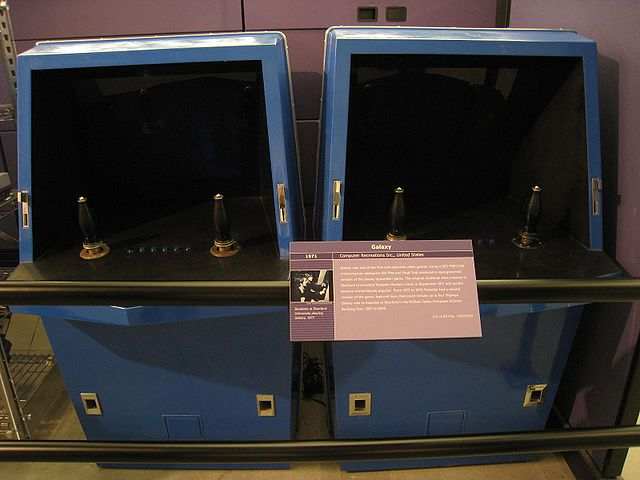
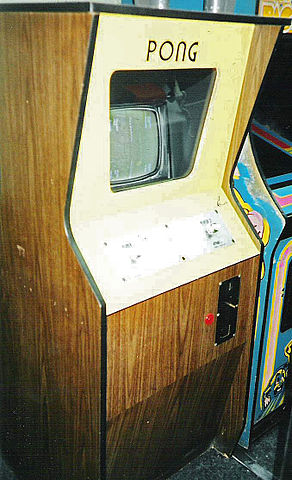
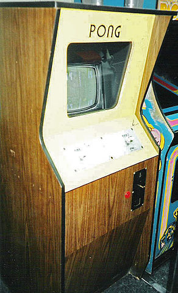

| Pág. Principal |
Década de 1950 |
Década de 1960 |
Únetenos |
| Galaxy Game Computer SpaceArcade de Pong Computer SpaceArcade de Pong |
Década de 1970Galaxy Game, la primera máquina arcade de la historiaA finales de la década de los 60 Bill Pits, un estudiante de la Universidad de Stanford fascinado por Spacewar! tuvo la idea de hacer una versión del juego que funcionase con monedas para su explotación en los salones recreativos. Desafortunadamente, el precio del hardware requerido para ejecutar el programa era mucho más elevado de lo que los propietarios de los salones, acostumbrados a pagar unos 1,000 dólares por las máquinas electromecánicas de la época, podían permitirse. Cuando el nuevo PDP-11 apareció en el mercado al «económico» precio de 20,000 dólares, Pitts pensó que tenía ante sí la oportunidad real de construir su máquina, y llamó a Hugh Tuck, un amigo del High School para construir un prototipo. En 1971 ambos formaron Computer Recreations, Inc., con el propósito de construir una versión operada con monedas de Spacewar!; Pitts se hizo cargo de la programación y Tuck, ingeniero mecánico, construyó la cabina. Tras tres meses y medio de trabajo habían finalizado la máquina, pero decidieron cambiar el título del programa a Galaxy Game. El invento obtuvo cierta resonancia, pero con un precio de 10 céntimos por partida, no resultaba rentable, de modo que construyeron una segunda versión de la máquina que permitía a un solo computador PDP-11 hacerse cargo de hasta ocho consolas simultáneamente, amortizando así los gastos. Computer Space, los inicios de Atari En 1968, mientras Bushnell trabajaba como ingeniero para Ampex, se percató de la salida al mercado del Data General Nova, un computador que costaba únicamente 3995 dólares (muy por debajo de la media de la época), y enseguida pensó en usarlo para poner en práctica su idea. Junto a Ted Dabney, otro ingeniero de Ampex, construyó un primer prototipo, pero el computador resultó demasiado lento y en 1970 el proyecto fue abandonado. Bushnell y Dabney decidieron dejar a un lado la idea de utilizar un computador de propósito general para construir una nueva máquina dedicada exclusivamente a ejecutar el programa. El nuevo aparato no poseía CPU, un componente demasiado caro en esa época, sino que usaba componentes discretos fabricados por ellos mismos así como un aparato estándar de televisión en blanco y negro como monitor. En el verano de 1971 Bushnell y Dabney se habían asociado bajo el nombre de Syzygy Engineering para presentar su prototipo a Nutting Associates, una empresa que comercializaba un aparato electrónico de preguntas y respuestas, entre otros productos. Nutting mostró interés hacia el proyecto y se encargó de la fabricación de un primer modelo, usando una carcasa de diseño futurista. En noviembre de 1971, el primer Computer Space se instaló en el bar Dutch Goose, cerca del campus de la Universidad de Stanford y obtuvo un éxito inmediato entre los estudiantes, animando a Nutting a la fabricación en serie del aparato.Pong, o el nacimiento de la industriaEl juego, que se convirtió en el primer título de la recién creada Atari, no suponía grandes innovaciones respecto al título de Baer, pero sí contaba con mejoras (rutina de movimientos mejorada, puntuación en pantalla, efectos de sonido, entre otras) que hacían presagiar el éxito que lograría en los salones.nota 14 Cuando Bushnell y Dabney vieron el trabajo de Alcorn finalizado decidieron cambiar sus planesnota 15 y probar la nueva máquina en el Andy Capp's Tavern, un local de Sunnyville, California. Al mismo tiempo Bushnell se presentó en las oficinas de Bally Midway, que por aquel entonces se dedicaba al negocio de los pinball, a presentar su trabajo, pero la propuesta fue rechazada porque, entre otras cosas, el juego no disponía de una opción para un solo jugador. Sin embargo, cuando los dueños del Andy Capp's Tavern llamaron a Alcorn para comunicarle una avería en su prototipo este descubrió que la máquina había dejado de funcionar porque su depósito de monedas se hallaba repleto.nota 16 Este episodio animó a Bushnell, quien se dirigió a Nutting Associates, pero la respuesta fue también negativa, lo que terminó por convencerlo de que debía ser la misma Atari la que se hiciera cargo de la fabricación y distribución de las máquinas.
| |